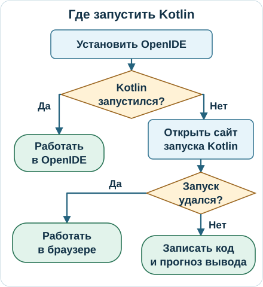

Установка среды для Kotlin и первый запуск
Установите OpenIDE и запустите первую консольную программу на Kotlin. Затем решите два коротких упражнения в той среде, где удалось запустить программу. Если на учебном компьютере установка или запуск проекта остановились, продолжайте в браузере.
Установка OpenIDE

- На странице загрузки выберите бесплатную редакцию OpenIDE. Для обычного Windows-компьютера с процессором Intel или AMD подойдёт сборка x64. Если OpenIDE уже установлена, откройте её.
- Запустите установщик на рабочем компьютере, где это разрешено. При запросе прав, которых у вас нет, запишите, на каком шаге остановились, и переходите к браузерному запуску.
- Откройте OpenIDE. Если при первом запуске появится выбор технологий, выберите Java и Kotlin.
Порядок установки описан в документации OpenIDE.
Первый запуск Kotlin в OpenIDE
- Нажмите Новый проект и выберите Kotlin. Назовите проект
KotlinPracticeи сохраните в своей рабочей папке. - В поле системы сборки выберите IntelliJ. В поле JDK выберите установленный JDK или загрузите предложенный мастером. JDK нужен для компиляции и запуска проекта. Если есть флажок Add sample code, включите его.
- Откройте созданный файл
Main.kt. Если образец не создан, нажмите правой кнопкой по папке исходников и создайте файл Kotlin Class/File типа File с именемMain. Вставьте программу. Если в файле есть строкаpackage, оставьте её надmain.
fun main() {
println("Kotlin работает")
}
- Нажмите зелёный треугольник рядом с
main. В окне Run должна появиться строкаKotlin работает. Измените текст в кавычках и снова запустите программу. Новый вывод показывает, что вы запустили свой код.
См. создание проекта в OpenIDE.
Резервный запуск в браузере
Если IDE не открылась, недоступен JDK или Kotlin-проект не удалось запустить, запишите шаг и текст ошибки. В любом из двух браузерных редакторов вставьте ту же программу с fun main().
- Kotlin Playground — выберите JVM и нажмите Run.
- Kotlin CodeUtility — откройте русскоязычный редактор и нажмите Запустить.
Проверьте, что после изменения текста меняется вывод. Запускайте по одной полной программе и копируйте каждое решение в отдельный файл .kt в своей рабочей папке. Если ни один способ запуска не сработал, запишите, что произошло, и подготовьте код и ожидаемый вывод с пометкой «без запуска».
Переменные, типы и вывод
fun main() — начало выполнения программы. Команды внутри фигурных скобок идут сверху вниз, а println выводит значение и переводит курсор на новую строку.
fun main() {
val step = 2
var position = 3
position = position + step
println("Позиция: $position")
}
Сначала у position значение 3. Строка присваивания прибавляет 2 и сохраняет 5 обратно в переменной. В строке вывода $position подставляет текущее значение.
| Значение | Тип | Что представляет |
|---|---|---|
3 |
Int |
Целое число |
2.5 |
Double |
Число с дробной частью |
"Kotlin работает" |
String |
Текст |
true |
Boolean |
Логическое значение |
Дробное число в коде пишется через точку. Кавычки превращают запись в текст, поэтому "3" + "2" даёт "32", а 3 + 2 даёт 5.
Два коротких упражнения
- Сумма двух чисел. Объявите два целых числа со значениями
8и5. Выведите строкуСумма: …. Затем замените5на-5. Перед каждым запуском вычислите ожидаемую сумму устно. - Счётчик шагов. Начните с
var steps = 10. Увеличьте значение на3, затем на2. Выведите значение после каждого изменения. Перед запуском предскажите обе строки.
Сохраните программы отдельно, например WarmupSum.kt и WarmupSteps.kt. В OpenIDE запускайте main нужного файла.
Первая проверка
К концу задания 34 подготовьте к показу короткий отчёт и один запуск.
- OpenIDE работает. Покажите окно проекта и вывод Kotlin. Назовите, какие упражнения удалось выполнить.
- OpenIDE установилась, но Kotlin не запустился, или установка остановилась. Назовите шаг и текст ошибки. Покажите, какой сайт сработал, что удалось на нём запустить и какие короткие задачи получились.
- Запуск недоступен. Покажите запись о попытках и подготовленный код или ожидаемый вывод. Отметьте, что запуска не было.
После этого переходите к основному блоку задач. Следующий показ преподавателю будет в конце задания 37.